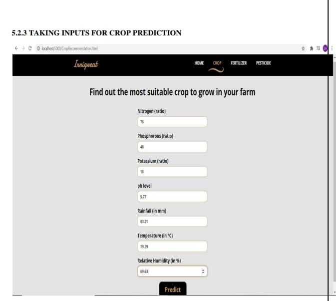

CROP PREDICTION USING MACHINE LEARNING
Designed and developed a Crop Recommendation System using machine learning algorithms, including SVM, Random Forest, KNN, and Voting Classifier, to guide farmers in crop selection based on soil and environmental conditions. Created an accessible web application for easy crop recommendations, enhancing proficiency in machine learning and data analysis.
